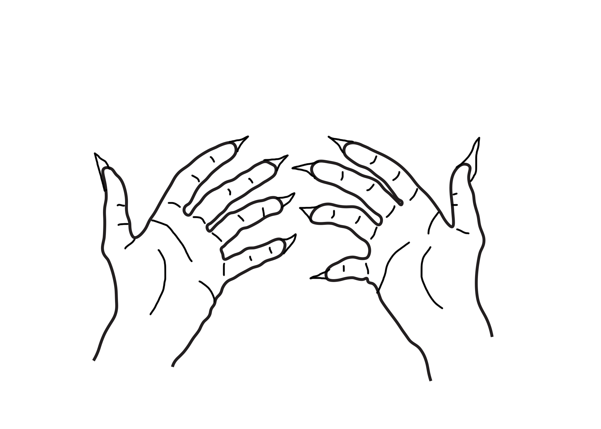

Genova Hand Animation:
 Genova PowersI decided to animated my characters (Genova) moment when she turned 18 and discovered she has powers. She felt it in her hands for the first time ever. I chose these shapes because it’s how I envisioned my character's power to look like. She is able to change the shape of it anytime. I chose my pacing to be a bit slow but productive. The most challenging part of this project has to be figuring out the layering. But as time went by I slowly understood how to work it.